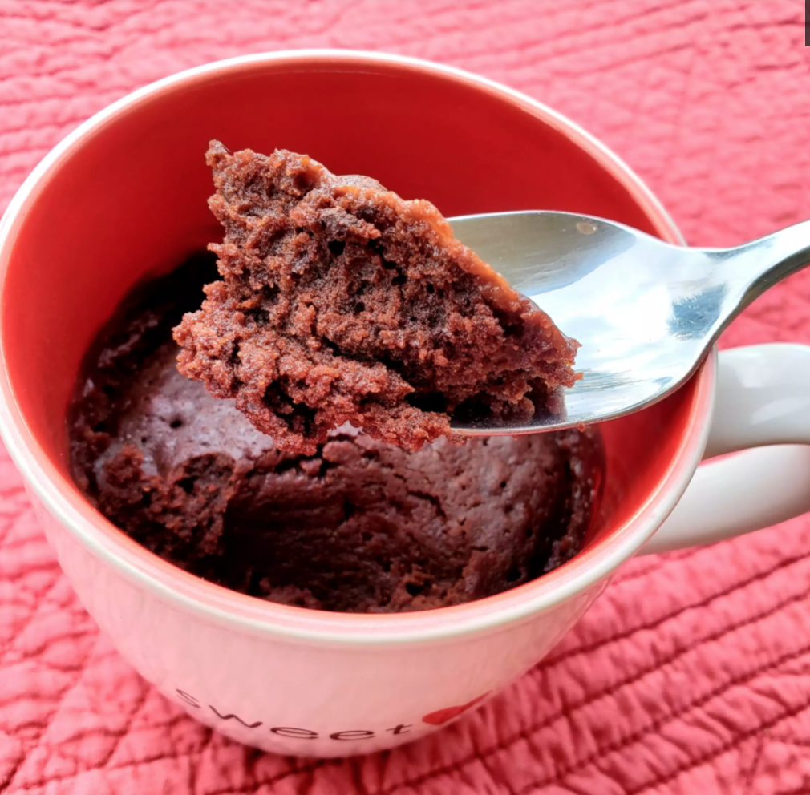

Easy Brownie in a Mug

Cook: 5 mins
Total:10 mins
Prep: 5 mins
Servings: 1
Yield: 1 brownie
Ingredients:
- ¼ cup all-purpose flour
- ¼ cup white sugar
- 2 tablespoons cocoa powder
- 1 pinch ground cinnamon
- 1 pinch salt
- ¼ cup water
- 2 tablespoons canola oil
- 1 splash vanilla extract
Steps:
- Stir flour, sugar, cocoa powder, cinnamon, and salt together in a microwave-safe mug. Stir water, oil, and vanilla extract into flour mixture with a fork until smooth.
- Microwave until set, 1 to 5 minutes.